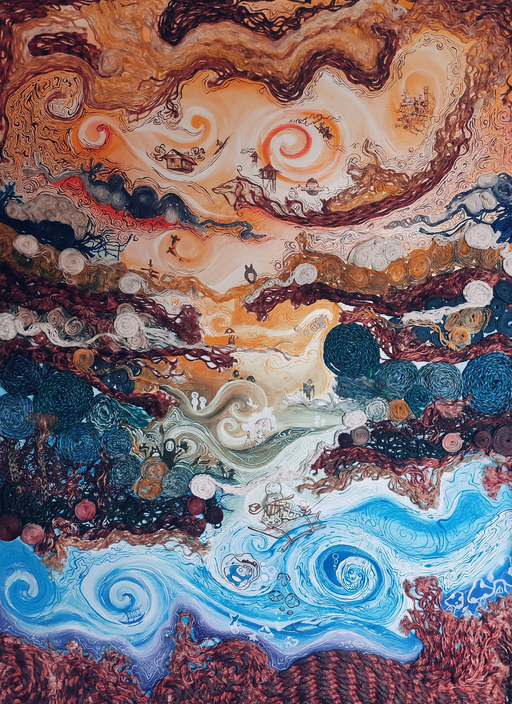

Janine channels her inner Mindanaoan spirit and directs this energy towards her ideals as she crafts her intermedia. Her technical abilities are based in the same degree of commitment in the physical process of creating the styles of the Mindanaoan tribes.
In the Mindanao Culture, the art styles are more vibrant, playful of lines and the new perspectives of landscapes emerged. This overall sense of connectivity among the Mindanao community is visualized in this series in a different light.

She loves to illustrate children literature that there is certain magic out of the different world. She wants the viewer to become as merely as child. The human feelings and values that we still hold dear in today's rapidly evolving reality.
As an artist, the sense of helplessness and misdirection during pandemic is a blessing-in-disguise, because it allows us to reconnect with reality. It now stands for art in its purest form, which links us to the outside world, other people, and our inner selves, much as how her characters connect the people of Mindanao.
This mixed media piece by Janine Mae Magbanua will hopefully give us a better understanding of what it means for an artist to use their passion to connect with the world and the people around them while at the same time spending more time introspectively in light of our newfound understanding of the meaning of "Samut-saring panaginip."